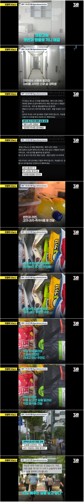

이미 다 나가서 전부 AI인 거 눈치 못챔?
혹시
"좋은 사람들은 밖에서 행복하게 살고,
나는 집에서 혼자 행복하게 살겠다"
를 말하는 것인가요? 😂
사실 너 빼고 다 ai임
나도 ai임 삐리릿
악용하는사람 나올까봐 걱정됨
이미 악용하는 사람들 천지고 그사이에 있던 진짜였을뿐..
배고프다고 반찬을 좀 달라는걸 어떻게 악용하냐
???: 반찬왜삼? 당근에서 배고프다고 달라하면 주는데?
저런 공공 장소에서 밥을 구걸하는 사람은 어떤 방면으로든 도움이 필요한 사람임. 평범한 인간이 그런걸 할 수 있을거같냐
도와 줬다가 영포티 찝쩍거린다는 소리는 안하겠지?
몇일전에 백김치랑 당근라페 만들었는데 가까우면 주고싶어
제가 체질상 백김치랑 당근라떼가 몸에서 합성이 안 되거든요. 주시면 간사히 받겠습니다.
제가 병약미소녀라서 같은 병약미소녀만 만날 수 있어요..
며칠
내가 몇일이라고 하면 몇일인거야
언어 독재자 ㄷㄷ
당신말이 맞습니다
맙소사 백김치와 당근라페로 사람을 쥐고 흔드네 이러면 몇일이라고 할 수 밖에 없잔아;
생활고에 햇반이라고?
살림해본적없는 애기면 그럴수있음
밥솥 살라면 십몇만원 드는데 그 돈이 없을수도 있음
밥솥같은거 한번에 지출하기 힘들어서
2000원대에 햇반으로 꾸역꾸역 버티는느낌임
보관하기좋고 먹기 편하고 생쌀로 냄비밥 하는것도 쉽지않음
닉값미쳣다
밥은 중대 사항이지.
햇반 비싸지않나?
햇방 200, 210g 기준 잘사면 개당 900원대에 살 수 있긴함 다른건 조금 더 싸고
저러면 차라리 고시원을 가는게 나음
고시원가면 밥도주고 라면도 무제한으로 주는곳이 많거든
사진보니까 좋은곳 들어간것 같은디
못 잃어..
상식적으로 자료사진 아니겠니?
대딩 때 고시원 살 때 알바비 과제한다고 다 써서 저녁에 배고파서 뒹굴뒹굴 하다가 눈물까지 났던 서러움 생각난다
9만원 짜리라 밥이나 간식도 제공 없고
Mean World Syndrome 이라고도 하는데 언론은 안좋은 사건만 보도하기 때문에 세상이 혼란스러워 보임. 실제로 강력사건이나 범죄는 시대가 발전할수록 줄어드는데, 사회 치안은 더 안좋아진다고 인식하는것도 이런 영향이 크고. 본문의 예시에서도 보다시피 생각 이상으로 사람들은 인간미 있고 친절함. 물론 집에서 쌀이나 캐는 애들은 이런거 모르고 혐오나 싸겠다만은.
근처 도서관가서 옛날 신문 펼쳐서 사건사고 보면
지금 시대가 호들갑 시대같이 느껴진다니까 ㅋㅋㅋㅋ
동사무소 가서 쌀이랑 김치 달라고 사정사정 빌면 주는데
몰랐겠지
김치만 주셔도 감사해요 >> 김치조차 못먹고있는 학생이있다 >> 주민들 발작버튼
한국에서 한국인이 김치를 못먹어??? 아ㅏㅏ주 큰일이지
아잇 싯팔 왜 세상이 망하지 않는 거냐고!
가만 보면 웃긴 모먼트가 사실 김치만큼 손 많이 가고 돈 들어가는 반찬도 드물텐데 한국에선 너무 흔하니까 오히려 “김치라도”가 되는게 아이러니임 ㅋㅋㅋ
김치 안해본 젊은이라면 그럴 수 있음...
저런 구걸글 가짜가 너무 많아서 많이들 무시할텐데 어떻게 연결이 잘됬네
고시원 가는게 나을거 같기도 하고
햇반을 먹은 이유는 방에 냉장고 없고 공용 전자레인지만 있으면 밥 보관이 어려워서 일 수도 있지 않나
나도 군 전역하고 사고 터져서 돈 없을때 핸드폰 소액결제 10만원으로 한달 버틴거 생각나네 알바가 식대 지급도 안해줘서 한끼 2000원정도로 하루 2끼 해결하니까 한달만에 10키로 빠지더라
바로 당근 킨다
인터넷보면 진짜 5만원으로 고기 엄청 사서 그걸로 소분해서 2주 3주 먹고 하더만 부모님한테 정말 그정도도 얘기 못항정도로 궁핍한거야?
이마트 와우샵에 전기밥솥 만원짜리 팔던데
진짜 온라인말고 현실에는 좋은사람들이 너무 많다
그러니까 나빼고 다 나가라